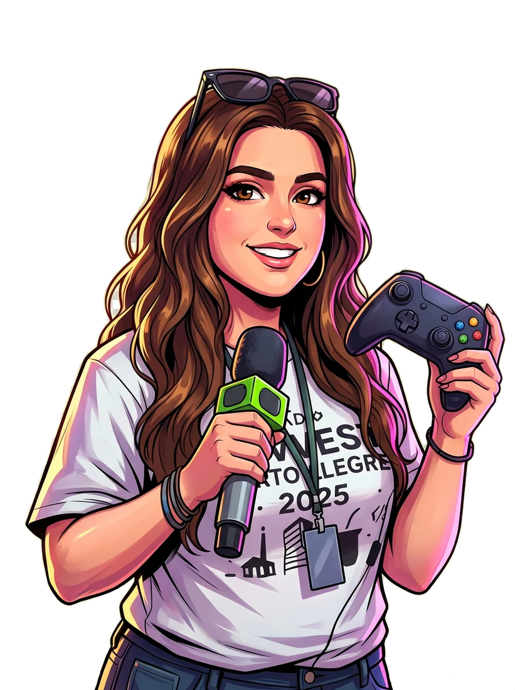
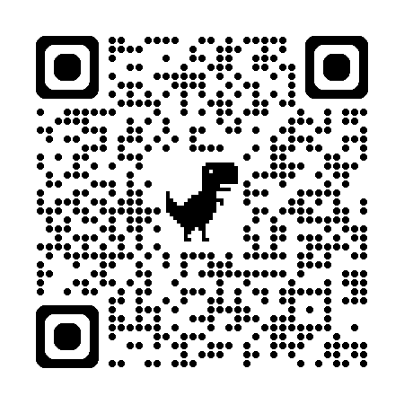

Modo
Multiplayer
ninguém zera tech no modo solo
▶ Player 1 pronto · bora jogar
▶ Press start

ninguém zera tech no modo solo

Hoje a sala inteira é um time só.
Cada missão que a turma faz junta vira XP lá em cima.
Quando eu chamar, todo mundo entra. Até o fundão.
Só aparece se a turma chegar lá. Sem spoiler.
Levanta a mão quem…
…já estudou horas pra uma prova e sentiu que não aprendeu nada.
…já travou num exercício e quis fechar tudo e ir dormir.
…já ficou sem vontade de abrir o caderno (ou o computador).
…já pensou: “isso não é pra mim”.
Boas-vindas ao clube. Ninguém aqui tá sozinho nisso.
Aos 19, eu vendia
colchão no shopping.
Começava tudo e não terminava nada. Não era preguiça: era falta de direção e barulho demais de fora.
“Tu pode mais do que isso.”
Ela não resolveu minha vida: me mostrou uma porta. O caminho eu andei, mas não andei sozinha.
Tímida, travava pra levantar a mão
Um meetup na faculdade, com tecnologia ainda cheia de novidade
Coordeno o GDG Porto Alegre e subo no palco
Rede não é uma coisa só. São três.
Família, amizade, professora. Quem responde teu áudio de 3 minutos.
Meetup, grupo de estudo, o Discord da galera, o GDG.
Gente que conhece gente: estágio, evento, área que tu nem sabia que existia.
⏱ VALENDO! O CRONÔMETRO TÁ RODANDO
Isso tem nome: networking. Tu acabou de fazer.
Braço pra cima = verdade · Braços em X = mito
É onde se aprende. Eu entrei num meetup quando tecnologia ainda era quase tudo novidade.
É conversar com uma pessoa de cada vez. Quem fala aqui era a mais tímida da sala.
Ada Lovelace escreveu um algoritmo pra uma máquina em 1843. Seis mulheres programaram o ENIAC em 1946.
…não ganha jogo. Cuida do teu personagem.
Um assunto por vez, 25 a 50 min e pausa. Revisar todo dia rende mais que virar a noite.
Procurando? Hora fixa na semana pra vagas e currículo. Já trabalha? Protege teu horário de estudo.
Ler algo que não cai na prova. Mexer o corpo. É o que te mantém no jogo.
Motivação não cai do céu. Tu fabrica.
15 minutos já contam. A vontade quase sempre vem depois que tu começa.
“Estudar pra prova” é vago. “Resolver 5 questões” dá pra marcar como feito.
Anota o que tu fez. No dia ruim, a lista lembra que tu andou.
E quando nem isso funcionar, chama teu time.
Tu não precisa parecer
com ninguém da sala
pra ter lugar nela.
Gurias: isso é especialmente pra vocês.
Às vezes o que trava não é falta de confiança: é não ver ninguém parecido contigo no caminho. Isso não é defeito teu. E é exatamente pra isso que rede existe: pra ninguém atravessar só.
Se pra ti é fácil pertencer: chama quem tá na beira, escuta, divide o palco.
“Se estou sozinha,
vou sozinha igual.”
Mas olha pro lado: tu não tá só.
“Isso não é pra mim.”
“Vão rir da minha pergunta.”
“Todo mundo aqui sabe mais que eu.”
“Já é tarde (ou cedo) demais pra mim.”
Ele não some de vez. Mas cada atitude tira um pedaço da força dele.
Em voz alta, no grupo, no evento.
Dúvida guardada cresce. Quando tu pergunta, descobre que não era só tu.
Uma amiga, um colega, alguém da turma.
Lugar novo com companhia deixa de ser desconhecido e vira programa.
Vai mesmo com frio na barriga.
O medo diminui fazendo, não esperando. Na segunda vez, ele já é menor.
Explica o que tu já sabe pra alguém.
Ensinando, tu percebe o quanto já aprendeu. O “eu não sei nada” perde força.
Levanta 1, 2, 3 ou 4 dedos: qual tu usa primeiro?
Responde as 4 perguntas. Celular ou papel, 2 minutos.
⏱ VALENDO!
ex.: alguém da família, uma amiga, um professor
ex.: um meetup, o GDG, um grupo de estudo
ex.: 3 exercícios, 1 vídeo de aula, 1 página
ex.: ler, treinar, caminhar, desenhar
Mostra teu plano pra tua dupla da missão 2.
Lembra da professora?
Ela nunca soube o tamanho do que disse. Hoje essa frase é minha pra passar adiante:
Tu pode mais.
E não vai só.
Um GDG, o Women Techmakers ou o grupo de tech mais perto de ti.
Time pequeno também zera fase.
Na aula, no grupo, no evento. Uma só já conta.
ninguém zera tech no modo solo

@masbahguriatech
linkedin.com/in/
fernanda-dossantos